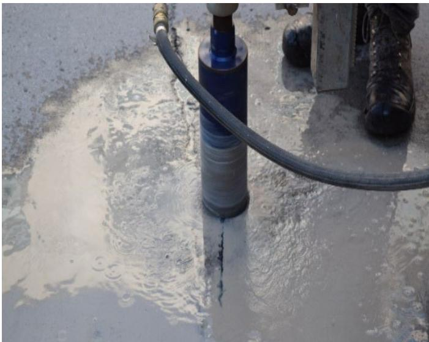
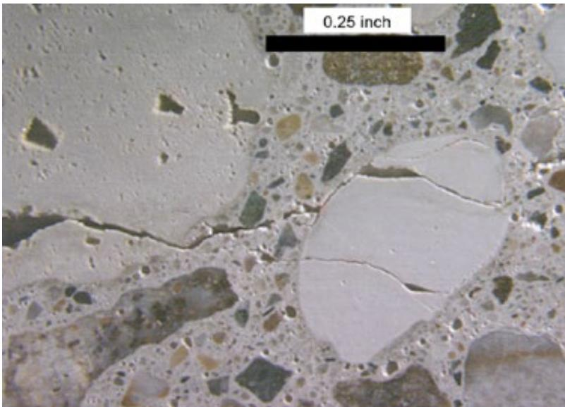
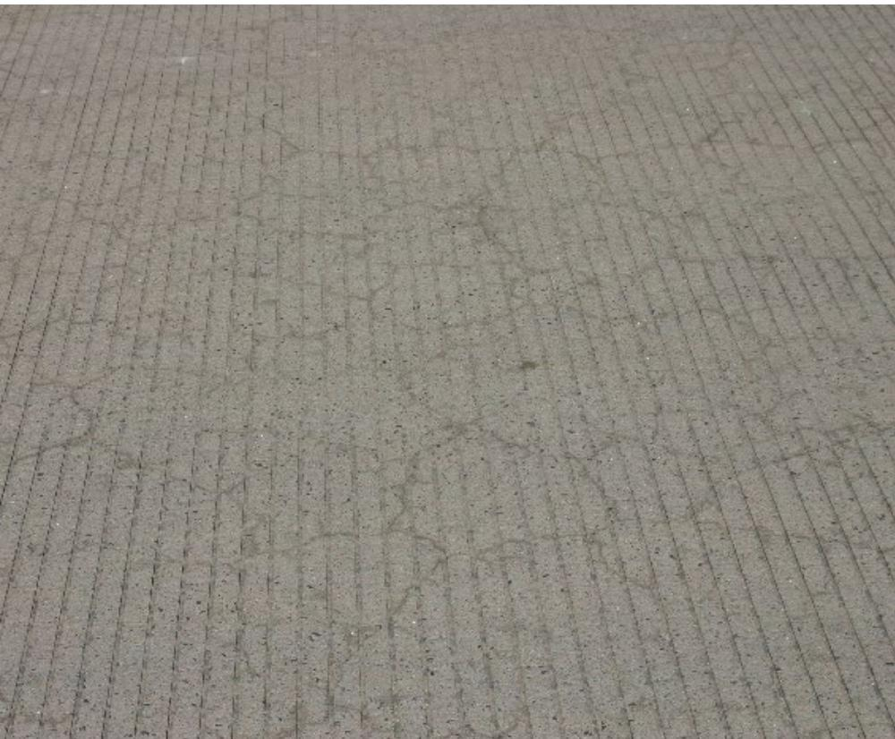

Field Testing Methods for Pavement Distress Assessment
Field testing methods for pavement distress assessment comprise a suite of destructive and nondestructive investigations—such as coring, falling‑weight deflectometer (FWD) measurements, and side‑force friction/texture devices—that quantify both the structural integrity of pavement layers and the surface slip‑resistance that governs vehicle control on curves [2][3]. By delivering quantitative data on crack penetration depth, layer stiffness, subgrade support, macrotexture, and friction, these tests enable engineers to diagnose distress mechanisms, select appropriate design thicknesses or rehabilitation strategies, and set performance thresholds for future monitoring [2][3]. When temperature‑sensitive or shrinkage‑related effects are suspected, the field program is typically augmented with laboratory analyses of representative cores to capture material behavior not observable in situ, ensuring a comprehensive basis for repair design decisions [2].
Sources (4)
Purpose and investigation objectives
The field‑testing investigation evaluates both structural and surface conditions of the pavement. Structurally, it assesses how distress manifests in the pavement layers—specifically the extent to which material‑related cracks penetrate through the layers, the underlying support provided by base and subgrade, and any settlement or heave that may compromise uniform support. Surface‑wise, side‑force testing evaluates the pavement’s surface friction and macrotexture that affect a vehicle’s ability to stay under control on horizontal curves. The investigation must answer: • “To accurately determine the depth of crack penetration.” • When longitudinal cracking is present, “field testing may help to determine possible causes of the distress and to identify appropriate preservation or rehabilitation solutions.” • “Determining the cause and most feasible rehabilitation option for both settlement and heaves requires evaluation of the existing pavement support conditions.” • Whether the current level of skid resistance across the test section meets acceptable performance thresholds for safe cornering, as “side‑force testers are designed to simulate a vehicle’s ability to maintain control on horizontal curves” and the SCRIM provides continuous measurements of friction, macrotexture, and related surface characteristics. [2][3]
The following figure illustrates longitudinal cracking resulting from longitudinally bounded variations in pavement support.
 Longitudinal cracking on a highway pavement surface. [2]
Longitudinal cracking on a highway pavement surface. [2]
The image displays a concrete roadway with visible longitudinal cracks running parallel to the direction of traffic, accompanied by painted lane markings and an exit ramp arrow.
[2] — Ch. 4 (pp. 136–296), Ch. 19 (p. 479); [3] — Ch. 3 (p. 64)
The guides emphasize that field testing—whether destructive cores, nondestructive probes such as the falling‑weight deflectometer, or complementary laboratory analyses—delivers quantitative measures of crack depth, layer strength, material behavior, and subgrade support. These results enable planners to select appropriate design thicknesses, adjust material specifications, prioritize interventions, and schedule maintenance actions. By pinpointing the magnitude, location, and cause of distress, engineers can choose between localized patching, full‑depth reconstruction, or preservation treatments that align with budget constraints and performance goals. In parallel, continuous side‑force measurements obtained with devices such as the SCRIM give engineers real‑time data on cornering friction and, when equipped with laser macrotexture sensors, on surface texture as well. Because these values are recorded over the entire test section rather than at isolated points, they reveal where friction falls below acceptable levels for safe vehicle control on curves, indicating a need for maintenance actions such as resurfacing or texture‑enhancing treatments. Consequently, planners can prioritize rehabilitation projects, design new pavement sections with adequate skid resistance, and set performance thresholds for future monitoring. [2][3]
The following figure illustrates a high-speed pavement profiler used to capture such continuous surface data.
 High speed pavement profiler vehicle equipped with sensors for longitudinal profile and ride quality measurement. [2]
High speed pavement profiler vehicle equipped with sensors for longitudinal profile and ride quality measurement. [2]
The image shows a white Ford Transit van outfitted with specialized equipment, including a roof-mounted sensor array and black boxes attached to the front bumper. This vehicle is identified as a High Speed Profiler (HSP), which provides a longitudinal profile along the wheel paths and ride quality values including faulting at joints and cracks. The HSP operates at highway speed to collect data faster without the need for traffic control or lane closures.
[2] — Ch. 4 (pp. 136–327), Ch. 19 (pp. 464–479); [3] — Ch. 3 (p. 64)
Scope and applicability
Field testing methods are appropriate for a variety of pavement types and distress conditions. For continuously reinforced concrete pavements (CRCP), coring provides a visual view of the underlying concrete to evaluate crack‑surface defects and friction testing measures surface slip resistance. Material‑related cracks—including D‑cracking, alkali‑silica reaction (ASR), longitudinal cracking, corner cracking, or other surface cracking—warrant coring, falling weight deflectometer (FWD) or similar field tests to determine crack penetration depth, assess underlying support conditions, and identify causative mechanisms. Settlement or heave distresses also require field testing to evaluate foundation‑layer support values, detect voids or non‑uniform support, and guide preservation or rehabilitation decisions; the selection of destructive versus nondestructive methods depends on project size, importance, and location. When site conditions raise concerns about temperature or shrinkage characteristics, complementary laboratory testing may be added. [2]
The figure below illustrates concrete pavement coring, a key field method for evaluating underlying structural conditions and distress mechanisms.

Concrete pavement coring [2]The image displays a rotary core drill with a hollow cylindrical barrel actively cutting into the concrete surface, generating water and slurry. This apparatus is used to extract material samples of both the base and subgrade soil for laboratory testing.
[2] — Ch. 4 (pp. 85–296), Ch. 13 (p. 42)
Field testing such as coring and falling‑weight deflectometer measurements can accurately determine crack penetration depth and evaluate the supporting subgrade, but they do not capture material behavior that is governed by temperature or shrinkage effects. Consequently, when temperature‑sensitive or shrinkage‑related concerns arise, a laboratory investigation should be added or used instead to obtain reliable data. As the report notes, “field testing including coring and the falling weight deflectometer (FWD) must be administered,” yet “If there are concerns regarding temperature or shrinkage characteristics, laboratory testing may be performed.” Moreover, field testing alone cannot reveal the detailed material properties needed to diagnose pavement distress; therefore, it should be paired with laboratory tests that characterize concrete, base and subgrade behavior. The guidance advises to “Conduct laboratory testing in conjunction with a comprehensive field evaluation to determine specific material properties or behavior,” and emphasizes that “The extent of the testing program depends primarily on the types of observed distresses and the available funds.” When complex material issues are indicated by field observations or when budget permits a more thorough analysis, complementary lab investigations are warranted. [2]
The following figure illustrates fractured aggregate in D-cracked pavement, a distress type that often necessitates such laboratory investigations.

Micrograph of fractured aggregate in D-cracked pavement [2]The image displays a cross-section of concrete containing various aggregates, with a large white particle exhibiting internal fracturing. This visual evidence illustrates the mechanism where water filling pores in susceptible aggregates undergoes freezing and thawing cycles, resulting in expansion and internal stresses that cause the aggregate to crack.
[2] — Ch. 4 (p. 136), Ch. 19 (p. 479)
Existing information and records
The current record base is dominated by visual inspections that describe the appearance of D‑cracking, ASR, and spalling but provide no confirmation of the underlying distress mechanisms or structural conditions. Because visual cues alone give limited confidence, there are inconsistencies between observed surface symptoms and the actual pathology, leaving uncertainty about whether cracks stem from material shrinkage, chemical reactions, temperature effects, or inadequate support. Moreover, the records do not contain quantitative data on crack depth or sub‑base condition, nor do they identify which specific tests should be applied to resolve these ambiguities. Consequently, field investigation must employ targeted sampling, coring, falling weight deflectometer measurements, and laboratory analyses to verify mechanisms, determine penetration depth, evaluate support, and isolate contributing factors before any remedial design can be selected. [2]
[2] — Ch. 4 (pp. 85–197)
Visual inspection and condition assessment
Field testing for pavement distress assessment must start with a visual on‑site survey that records all observable defects. The visible distresses to be examined include crack surface defects, D‑cracking, alkali–silica reaction (ASR) distress, longitudinal cracking, corner cracking, and spalling. For each crack type the depth of penetration and underlying support conditions are quantified with coring and, when needed, falling weight deflectometer measurements. Surface friction characteristics—an indicator of slickness or loss of texture—are also measured through standard friction testing to complement the visual findings. The identification of any of these defects triggers targeted field tests that diagnose the underlying mechanisms and inform appropriate preservation or rehabilitation strategies. [2]
The following figure illustrates common surface defects such as map cracking that are identified during these visual surveys.

Map cracking on a concrete pavement surface. [2]The image displays a close-up view of a gray concrete surface characterized by a network of fine, interconnected cracks resembling the pattern of a dried riverbed or map. This visual evidence represents ‘map cracking’, which is identified in the source context as a minor surface defect that typically does not significantly detract from structural integrity but impacts functional performance and aesthetic appeal.
[2] — Ch. 4 (pp. 85–197), Ch. 13 (p. 42)
Field measurements and testing
Field testing for pavement distress assessment employs several nondestructive and minimally invasive methods. Coring is used to evaluate crack‑related surface defects; by extracting a core the inspector obtains a visual representation of the pavement beneath the crack and can measure how far the crack penetrates into the structure. Friction testing quantifies slip‑resistance of the riding surface, indicating the safety of vehicle travel. The falling weight deflectometer (FWD) provides an elastic response measurement of pavement layers under a simulated load, allowing inference of structural capacity and detection of subgrade deficiencies. Side‑force testing, performed with equipment such as MuMeter or SCRIM, measures the lateral cornering force generated by a free‑rolling wheel set at a fixed yaw angle; continuous side‑force records indicate skid resistance on curves. When equipped with a laser macrotexture system, SCRIM also yields a continuous macrotexture profile, further indicating surface texture condition and friction performance. [2][3]
The figure below illustrates friction measurements taken using the California CT-342 device at various angles relative to the pavement centerline.
 Friction index relative to friction in the direction of travel for various concrete pavement surface textures at different deviation angles. [3]
Friction index relative to friction in the direction of travel for various concrete pavement surface textures at different deviation angles. [3]
The figure displays a line chart plotting the ratio of friction measured at varying angles relative to the standard longitudinal friction measurement against the deviation from the direction of travel in degrees. It compares four specific concrete pavement surface textures: CDG, Random transverse tined, Astro turf, and Grooved. The data illustrates how friction changes as a vehicle deviates from the longitudinal direction of travel, showing that grooved surfaces increase in relative friction while transverse tined surfaces decrease.
[2] — Ch. 4 (p. 136), Ch. 13 (p. 42); [3] — Ch. 3 (p. 64)
Findings, confidence, and next actions
Field testing, when integrated with laboratory analysis, provides the primary means of moving beyond suggestive visual signs to a definitive diagnosis of pavement distress mechanisms. It can confirm the specific type of distress, quantify crack penetration depth, evaluate underlying support conditions, and point toward suitable preservation or rehabilitation actions. However, confidence is moderated by factors such as temperature‑ or shrinkage‑related effects that require laboratory follow‑up, the severity and extent of the observed distresses, and budgetary constraints that may limit the scope of testing. Consequently, while a clear causal link can often be established, the level of diagnostic detail may range from minimal to comprehensive, leaving uncertainty when only a limited test suite is employed or newer methods are not considered. [2]
The figure below illustrates common distress patterns such as transverse and diagonal cracking that field testing aims to diagnose.
 Transverse and diagonal cracking in concrete pavements [2]
Transverse and diagonal cracking in concrete pavements [2]
The image displays a section of gray concrete pavement featuring a prominent, irregular crack running vertically through the center. A yellow painted line intersects the pavement horizontally across the frame. The caption identifies these features as transverse and diagonal cracking, which are described in the source context as distinct fractures that typically extend through the entire thickness of the slab.
[2] — Ch. 4 (pp. 85–136), Ch. 19 (pp. 464–479)
Based on the field‑testing results, the recommended follow‑up actions are a tiered program of additional testing, monitoring, design verification, corrective work, and preservation measures. First, when material‑related cracking is detected, “To accurately determine the depth of crack penetration, and to evaluate the underlying support conditions, field testing including coring and the falling weight deflectometer (FWD) must be administered.” These measurements confirm both crack depth and subgrade stiffness. If temperature or shrinkage effects are suspected, “If there are concerns regarding temperature or shrinkage characteristics, laboratory testing may be performed” on representative cores to obtain thermal‑shrinkage properties before any design changes.
For settlement‑ or heave‑related cracks, the program expands to include investigations that quantify foundation support values and locate voids. The overarching purpose is captured in the statement: “The overall goals of the testing program are to assess the current support values provided by the foundation layers, determine the reason for the movement causing the distresses, discover the extent of the problem, determine if the pavement has voids under it or non‑uniform support to the extent that continued movement is likely, and finally, to develop effective repair strategies.” Design checks must verify subgrade bearing capacity; ongoing monitoring may be required where movement persists.
Finally, a laboratory testing program aligned with the observed distress type should be launched. “Conduct laboratory testing in conjunction with a comprehensive field evaluation to determine specific material properties or behavior.” The scope of this program is guided by funding and distress severity: “The extent of the testing program depends primarily on the types of observed distresses and the available funds,” and appropriate tests are selected from the concrete, base, and subgrade suites. Based on these results, corrective actions such as targeted backfilling, soil stabilization, slab replacement, or other rehabilitation options are specified, and preservation strategies—most notably improved drainage and moisture control—are incorporated to prevent recurrence. [2]
[2] — Ch. 4 (pp. 136–296), Ch. 19 (p. 479)
References
- Guide for Concrete Pavement Distress Assessments and Solutions:Identification, Causes, Prevention, and Repair ·
concrete_pvmt_distress_assessments_and_solutions_guide_w_cvr - Concrete Pavement Preservation Guide (Third Edition) ·
concrete_pvmt_preservation_guide_3rd_edition_web